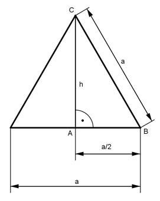

Pythagoras Aufgabe 48 Berechnen Sie die Seite a eines gleichseitigen Dreiecks in cm, wenn seine Fläche A = 18 cm2 beträgt.

Satz von Pythagoras im Dreieck ABC: a a a2 = h2 + (---)2 | -(---)2 2 2 a a2 h2 = a2 - (---)2 = a2 - ----- 2 4 3a2 h2 = ------ |√ 4 h = 0,87 * a a * h A = ------- 2 a * 0,87a 18 = ------------ |*2 2 36 = 0,87 * a2 |:0,87 41,4 = a2 |√ a = 6,4 cm